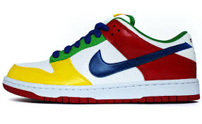
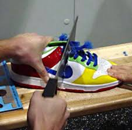
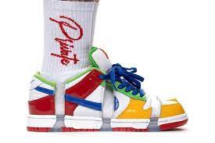

The eBay Dunks are probably the rarest Nike SB’s ever made, with only one pair known to be in existence now. In August 2003, a pair was auctioned off and sold for a whopping $30,000, with the winner receiving a pair of the kicks in his own size. The proceeds went to the Tim Brauch Foundation and also to the benefit of skate parks in the Portland area. The original sample, seen at the auction, ended up being destroyed, cut into pieces. The sneaker is truly unique featuring patent leather uppers in eBay’s signature green, blue, yellow, and red with some white. Also, the “Nike” on the heel is stitched in eBay style font. In May 2018 Sandy Bodecker, the man who pioneered Nike SB, revealed a fully intact pair that was given to him upon his retirement from Nike.


